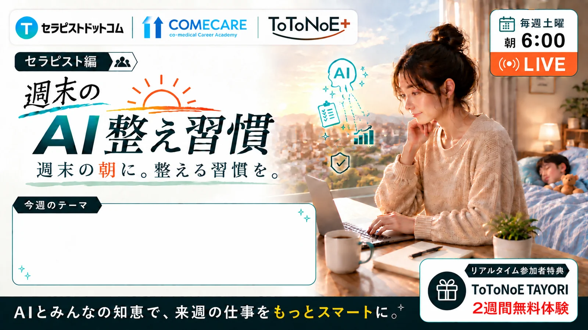
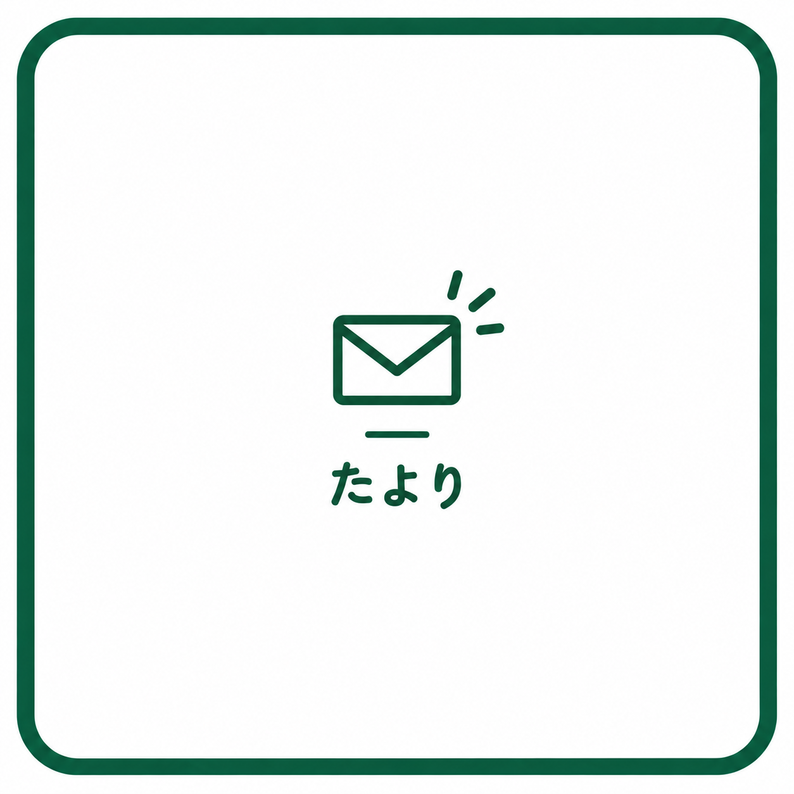
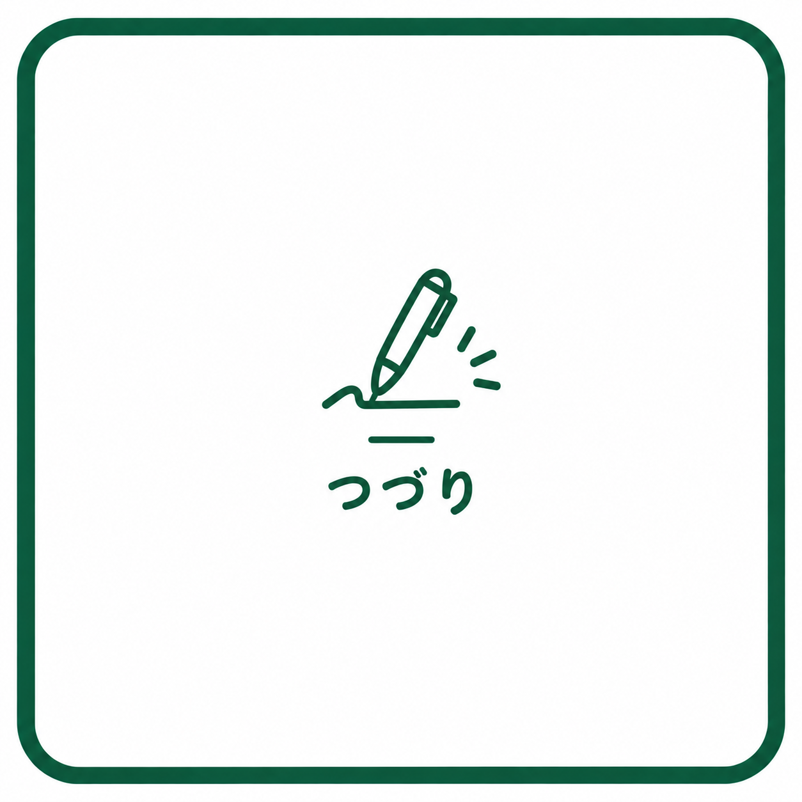
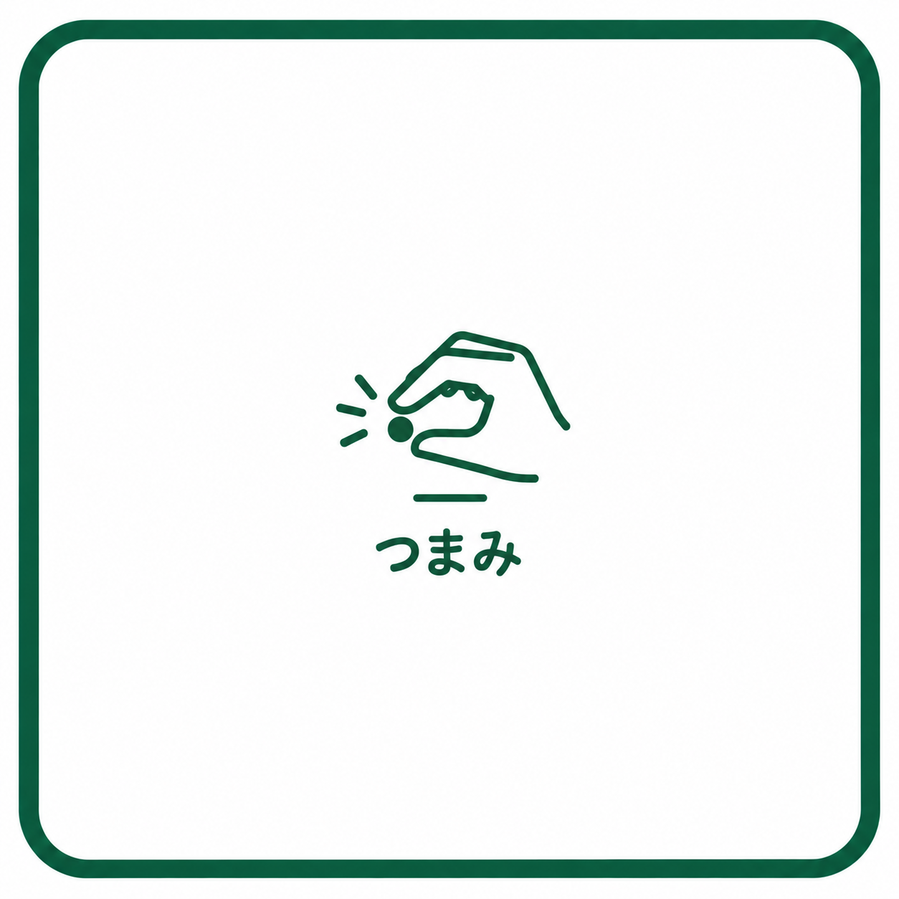
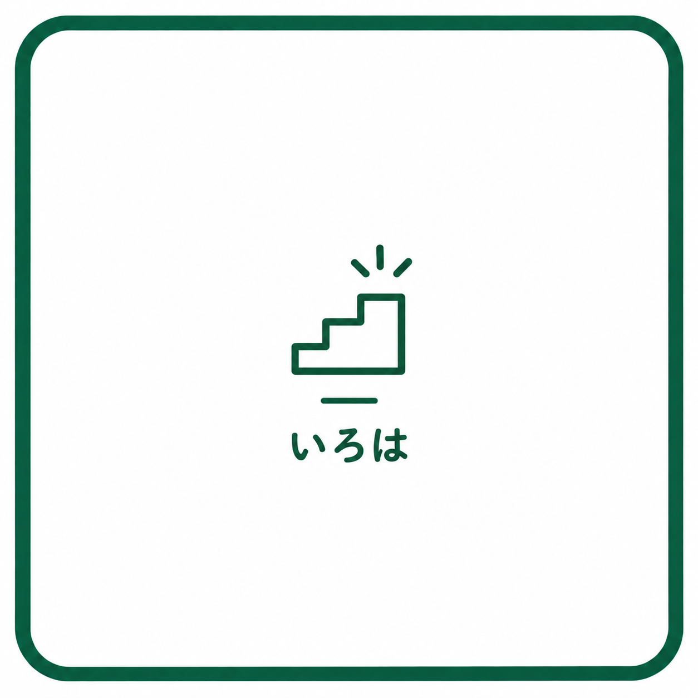

AIを仕事に活かす学びと実践を届けます。
SEMINARS

現在、開催予定のセミナーはありません。
SERVICE
たより、つづり、つまみ、いろは。目的に合わせて選べる4つのサービスです。

情報を整える。
知っておきたいAIの変化を、実務につながる視点で整理して届けます。

考えを、ことばに。
ToToNoE+の考え方や、AIと専門職の働き方を記事で届けます。

気になるAIを、ひとつまみ。
今すぐ試せるAIの要点を、短い動画や資料で届けます。

基礎から、実践へ。
AIの基本から、仕事で使うための考え方と手順を身につけます。